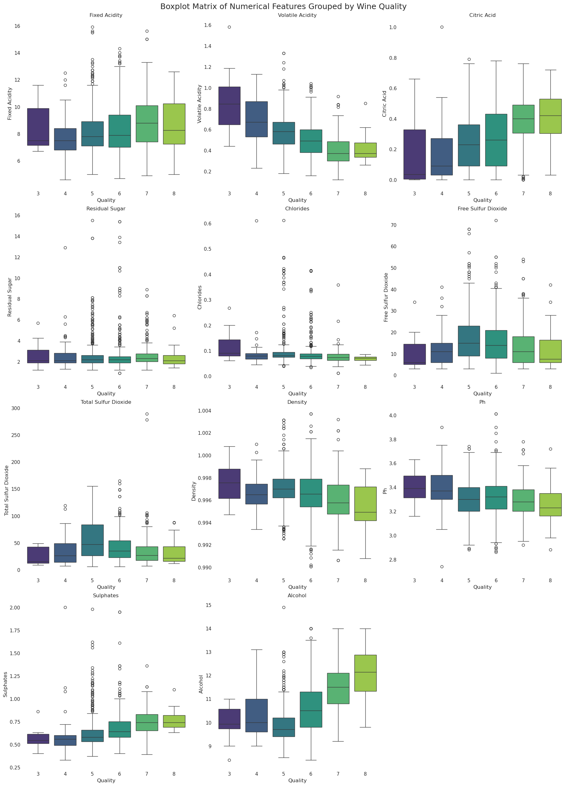
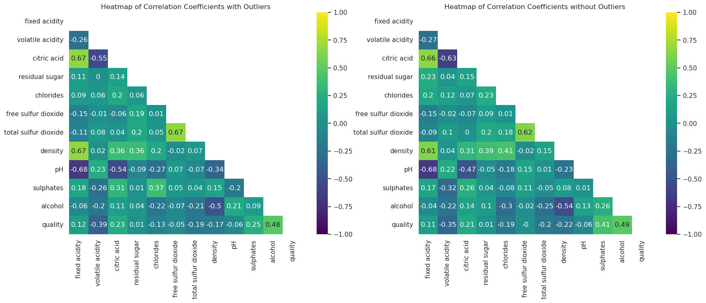

Regression Analysis of Red Wine Quality Dataset
This dataset contains physicochemical properties of red wine samples to predict wine quality scores. It provides a clean and accessible foundation for regression analysis.
Overview
In this analyses, I explore the Red Wine Quality dataset from Kaggle , which originates from the UCI Machine Learning Repository. The dataset was compiled by Paulo Cortez and colleagues in 2009. The goal of this analysis is to understand which physicochemical properties of red wine most strongly influence its quality rating, using linear regression as an explanatory tool.
Key Highlights
The amount of alcohol, sulphates, and volatile acidity were the key features in predicting the wine quality score.
- Distribution of features by quality score

Figure 1: Boxplot matrix for feature distribution by quality scores.
- Correlation analyses of features.

Figure 2: Pearsons's R correlation coefficients heatmaps.
- Hypotheses testing provides statistical evidence that alcohol content has a positive influence on perceived wine quality.